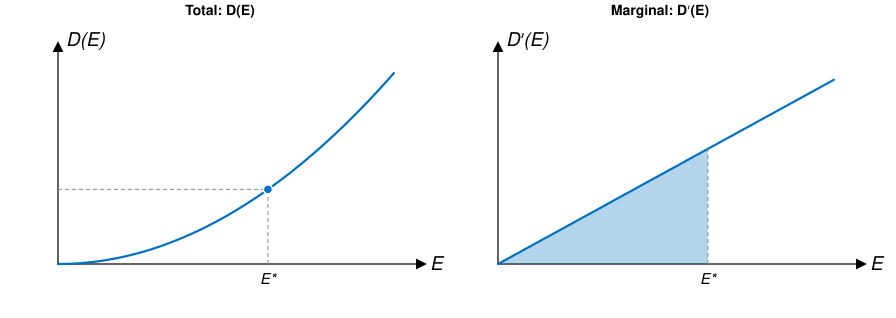
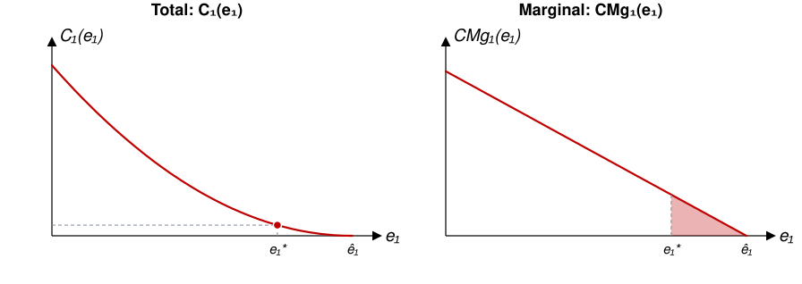
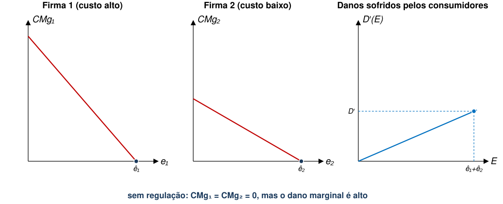
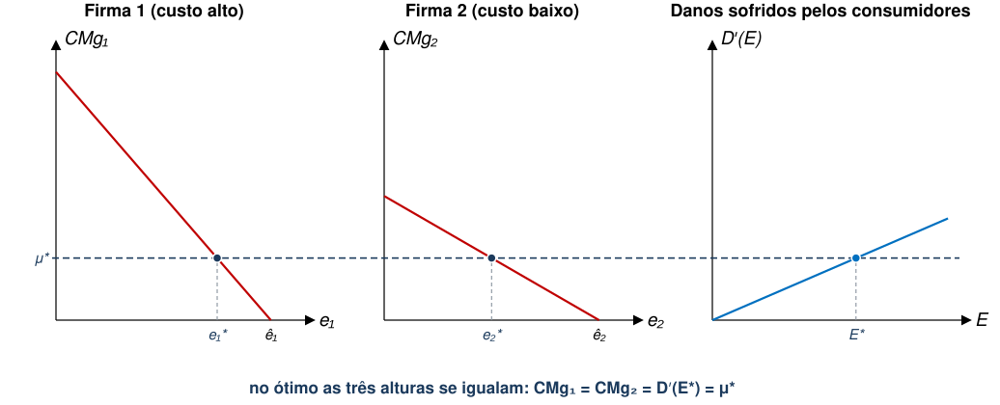
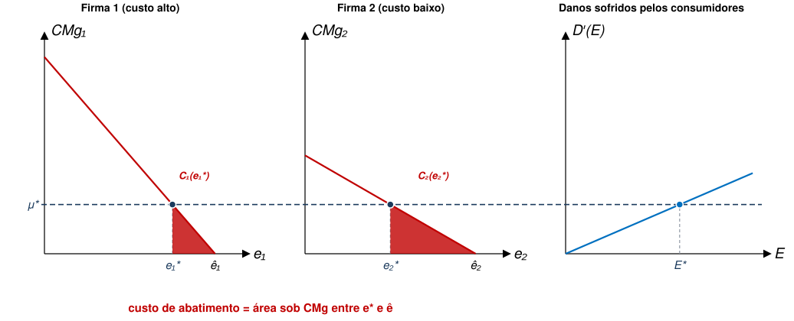
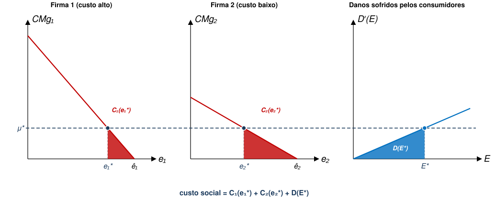

EAE1317 — Economia do Meio Ambiente e dos Recursos Naturais
2026-08-13
Na primeira aula, fizemos essa pergunta sobre o litoral paulista e demos uma resposta parcial. Hoje, derivaremos esse resultado analiticamente.
(a) Zero.
(b) O menor nível que a tecnologia disponível permitir.
(c) Depende.
Referência: Phaneuf e Requate, cap. 3
Premissas Gerais
| Premissa de hoje | Contraponto |
|---|---|
| Informação completa | Informação Assimétrica |
| Mercados competitivos | Mercado Não-Competitivo |
| Poluição não é cumulativa | Recursos Naturais e Sustentabilidade |
| Espaço e tempo não importam | Recursos Não-Renováveis |
| Sem dimensão internacional | Transição Energética; Recursos Comuns |
Cada firma \(j\) emite uma quantidade de poluição \({e}_{j}\).
\[E=\sum_{j=1}^{J} {e}_{j}\]
1. Danos custo da poluição para quem sofre suas consequências
2. Custos de abatimento custo das firmas para deixar de gerar poluição
3. Ponto ótimo o nível de \(E\) que minimiza a soma dos dois
Consumidores têm função utilidade dada por
\[{U}_{i}\left({y}_{i},E\right)={y}_{i}-{D}_{i}(E)\]
Função de Danos é crescente e convexa
Dano agregado é dado simplesmente por
\[D\left(E\right)=\sum_{i=1}^{I} {D}_{i}(E)\]

1. Danos custo da poluição para quem sofre suas consequências
2. Custos de abatimento custo das firmas para deixar de gerar poluição
3. Ponto ótimo o nível de \(E\) que minimiza a soma dos dois
\(\rightarrow\) Quanto maior a redução de poluição, maior o custo
\[CM{g}_{j}\left({e}_{j}\right)=-{C}_{j}^{′}\left({e}_{j}\right)>0 \quad \text{para } {e}_{j}<\hat{e}_{j}\]
Exemplo da usina a carvão

1. Danos custo da poluição para quem sofre suas consequências
2. Custos de abatimento custo das firmas para deixar de gerar poluição
3. Ponto ótimo o nível de \(E\) que minimiza a soma dos dois
Duas usinas a carvão emitem 50 t de \(S{O}_{2}\) cada por ano. Cortar emissões custa, em blocos de 10 t (R$ mil):
| Bloco cortado | 1º | 2º | 3º | 4º | 5º |
|---|---|---|---|---|---|
| Usina A | 10 | 20 | 30 | 40 | 50 |
| Usina B | 20 | 40 | 60 | 80 | 100 |
Cada 10 t emitidas causam R$ 45 mil de dano à população vizinha.
(a) Quanto cortar no total? (b) Quanto em cada usina?
(c) Quanto custou o último bloco cortado em cada uma?
| Abatimento | Dano | Custo social | |
|---|---|---|---|
| Sem regulação (0 t cortadas) | 0 | 450 | 450 |
| Corte uniforme (30 t de cada) | 180 | 180 | 360 |
| Poluição zero (100 t cortadas) | 450 | 0 | 450 |
| Corte eficiente (40 + 20 t) | 160 | 180 | 340 |
Como encontramos a alocação ótima de Pareto neste modelo?
\[SC\left({e}_{1},...,{e}_{J}\right)=\sum_{j=1}^{J} {C}_{j}({e}_{j})+D(E)\]
Condição de Primeira Ordem tem duas implicações importantes:
\[CM{g}_{j}\left({e}_{j}\right)=-{C}_{j}^{′}\left({e}_{j}\right)={D}^{′}\left(E\right) \quad \forall j\in \{1,...,J\}\]
\[CM{g}_{j}\left({e}_{j}\right)=-{C}_{j}^{′}\left({e}_{j}\right)=-{C}_{k}^{′}\left({e}_{k}\right)=CM{g}_{k}\left({e}_{k}\right) \quad \forall j,k\]
Estratégia para regular externalidade ambiental é ótima (eficiente) se conduzir a alocações que satisfaçam ambas essas condições.
| No exercício | No modelo | |
|---|---|---|
| Onde parar de cortar | último bloco custa R$ 40 mil, o próximo custaria mais do que os R$ 45 mil de dano | \(CM{g}_{j}({e}_{j})={D}^{′}(E)\) |
| Como repartir o corte | o último bloco cortado custa o mesmo nas duas usinas | \(CM{g}_{j}({e}_{j})=CM{g}_{k}({e}_{k})\) |
| O que sobra de fora | quem paga a conta do abatimento | modelo deixa em aberto |




Custo social: R$ mil = abatimento + dano ·
Qual é o nível ótimo de poluição?
(a) Não é zero: as últimas toneladas cortadas custam mais do que o dano que evitam.
(b) Não é o que a tecnologia permitir, pois esta informa quanto custa cortar, não quanto vale cortar.
(c) É o nível em que o custo de cortar mais uma tonelada iguala o dano que essa tonelada causa (que será o mesmo em todas as firmas).
Falta a pergunta que o modelo não responde abertamente: quem deveria pagar a conta? Falaremos mais sobre isso na próxima aula.
EAE1317 — Economia do Meio Ambiente e dos Recursos Naturais